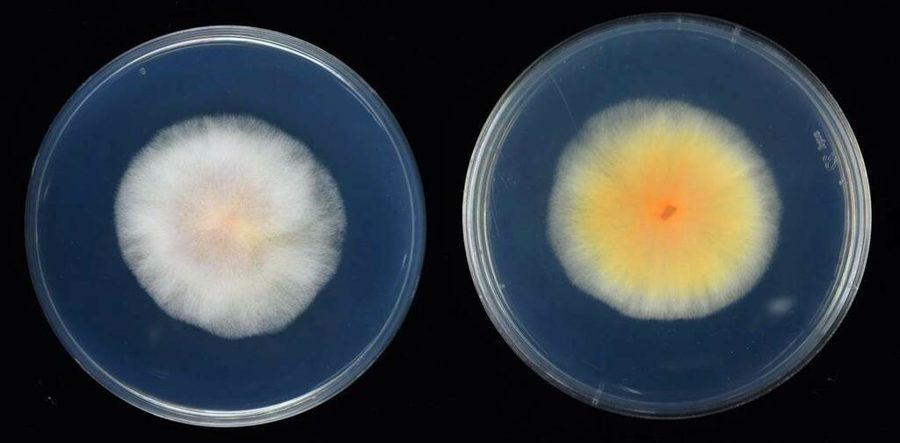

बकाने रोगBakanae Disease of Rice
Fusarium fujikuroi · Nectriaceae · FNG-0038

- Scientific name वैज्ञानिक नाम
- Fusarium fujikuroi Nirenberg, 1976
- Family कुल
- Nectriaceae
- Hindi हिंदी
- बकाने रोग
- Local names स्थानीय नाम
- bakanae rog, foolish seedling disease, bakanae, bakane
- Status here यहाँ की स्थिति
- native
- Movement आवागमन
- Resident, here all year
- Known from कहाँ दर्ज
- Others have published records from the wider Awadh–Purvanchal plain, none yet from Basti–Ayodhya अवध–पूर्वांचल से दूसरों के प्रकाशित अभिलेख, बस्ती–अयोध्या से अभी नहीं
- IUCN IUCN
- not evaluated
- Review समीक्षा
- not yet reviewed
When to look कब देखें
Expected mainly in June, July, August, September, October. मुख्यतः जून, जुलाई, अगस्त, सितंबर, अक्टूबर में अपेक्षित।
Tell it apart from इनसे अलग पहचानें
बकाने रोग / Bakanae Disease of Rice
Fusarium fujikuroi Nirenberg, 1976 — Nectriaceae
बकाने रोग — धान की नर्सरी में कुछ पौध बाकी से कहीं लंबी, पतली और पीली निकल आती है — जापानी में "बकाने" यानी मूर्ख पौध। यह बीज के साथ आने वाली एक फफूँद का काम है, जो पौधे में बढ़वार का हार्मोन (जिबरेलिन) बनाती है। ऐसी पौध रोपाई के बाद कमज़ोर रहती है या मर जाती है। भारत में यह बासमती किस्मों में सबसे ज़्यादा देखा गया है (Bashyal et al. 2016)। बचाव का पहला उपाय साफ़ बीज और बीजोपचार है।
Quick Identification त्वरित पहचान
| Feature | Description |
|---|---|
| Seedling height | Abnormally tall and slender, standing well above the healthy seedlings around it |
| Leaf colour | Pale yellow to chlorotic (lack of green pigment); thin, spindly leaves |
| Leaf appearance | Thin, wiry, drawn-out; older leaves may show reddish or brownish tints |
| Plant structure | Weak, spindly stems; cannot stand upright; collapse under water or weight |
| Root system | Poorly developed; sparse; dark or necrotic; weak anchor roots |
| Nursery pattern | Scattered affected plants among normal ones, because the infection came with individual seeds |
Field tip: In a rice nursery (June–July), look for seedlings that are distinctly taller and paler than their neighbours. They will be weak, unable to support themselves, and may be bent or lying down. After transplanting, these weak seedlings often die or remain severely stunted.
हिंदी — कैसे पहचानें: पौध असामान्य रूप से लंबी, पीली, कमजोर। सामान्य पौध से कहीं लंबी। खड़ी नहीं रह सकती। नर्सरी में जून-जुलाई में दिखती है।
Morphology and Symptomatology आकृति और लक्षण
Fungal structures (visible with microscope):
| Structure | Appearance |
|---|---|
| Conidia (spores) | Two kinds, as in the F. fujikuroi complex: slender, slightly curved, several-celled macroconidia, and abundant microconidia in chains on the hyphae (Leslie & Summerell 2006) |
| Mycelium | Thread-like, hyaline, spreads through seed coat and seedling tissues |
| Chlamydospore | Thick-walled survival spore; forms in old cultures and infected residue |
| Sporodochia | Fruiting masses visible as reddish or orange pustules on seed surface in moist conditions |
Disease progression:
- Seed infection: Fungus infects seed during grain filling in the field; spores penetrate seed coat
- Seed storage: Infected seed remains viable; fungus dormant but viable
- Germination: Upon sowing, fungus activates; colonizes seedling roots and shoots
- Gibberellin production: Fungus produces abnormally high levels of the plant hormone gibberellin (GA₃), causing excessive cell elongation
- Symptom expression: within the first weeks the infected seedlings overtop the rest, pale and weak
- Severity: Seedlings become so weak they collapse; transplanting success is very low
Life Cycle / Phenology जीवन चक्र
In eastern UP (monsoon rice: June–October):
| Stage / Month | Event |
|---|---|
| Previous year (Sept–Oct) | Rice harvest; infected grains left in field; fungus survives in seed and crop residue over winter |
| April–May | Farmers collect and store rice grain for seed; infected grain mixed with healthy grain (difficult to detect) |
| June (seed treatment) | Farmers prepare seedbeds; sow rice seed (often infected) in nursery beds |
| June–July (germination) | Seed germinates; infected seeds show abnormal germination; seedlings emerge tall and pale within weeks |
| July (nursery) | SYMPTOM VISIBILITY — Bakanae symptoms obvious in infected seedlings; healthy seedlings normal height and colour |
| July–August (transplanting) | Infected seedlings transplanted or discarded; if transplanted, often fail to establish; many die in field |
| August–September | Healthy crop grows normally; infected areas show stunted, non-productive plants (if any survived) |
| September–October | Harvest; infected plants produce few or no grains; seed becomes infected for next cycle |
Overwintering: Fungus survives in infected crop residue and soil; primary source is infected seed.
Ecology and Substrate पारिस्थितिकी और आधार
Mainly seed-borne: infected seed is the primary inoculum, and clean seed is the main defence (Gupta et al. 2015).
Conditions: warm, moist seedbeds favour infection and the gibberellin effect; the fungus survives in dry stored seed from one season to the next.
Host specificity: Primarily rice (Oryza sativa); occasional reports on other rice species and wild rice relatives, but not virulent.
Transmission: Mainly through seed; soil and residue matter less.
Agricultural / Human Relevance कृषि प्रासंगिकता
Economic impact:
- Yield loss: published figures run from a few per cent to almost total in badly affected fields (Singh, Kapoor & Kumar 2025 collect reports of 3–95 per cent); in India the disease rose from minor to serious with the spread of basmati cultivars, most of which are susceptible (Bashyal et al. 2016)
- Quality loss: weak plants produce light grain and poor seed
Management — in order of priority:
- Seed health (MOST EFFECTIVE):
- Disease-free seed: Use certified seed from recognized agencies (ICAR, state seed corporations)
- Seed treatment: fungicidal seed treatment is the main control worldwide (Singh et al. 2025); the KVK gives the current product and rate for the district, and none is given here
- Seed testing: Before sowing large areas, grow a test seedbed to detect bakanae
- Visual inspection: Discard discoloured, small, or infected-looking seed
- Resistant varieties:
- Many modern rice varieties show resistance or tolerance; consult local Agricultural Extension offices (KVK) for recommended varieties in your district
- Local farmers' seed exchanges often carry susceptible varieties; ask about bakanae history
- Field sanitation:
- Remove and destroy infected seedlings during nursery stage (before they spread fungus)
- Avoid overlapping nurseries (current and previous season); rotate seedbed location
- Crop rotation:
- Rotate rice with non-host crops (legumes, vegetables) in areas with persistent bakanae history
Expected Locally स्थानीय रूप से अपेक्षित
Not a field record. Written from published accounts for eastern Uttar Pradesh. No confirmed local sighting yet — if you have seen it, that is what the atlas needs.
अभी तक स्थानीय पुष्टि नहीं। यह विवरण प्रकाशित स्रोतों से है, किसी अवलोकन से नहीं।
GBIF holds published records from the wider Awadh–Purvanchal plain, none yet from Basti–Ayodhya.
Bakanae is expected in rice nurseries throughout eastern UP during the monsoon rice season (June–July). Incidence depends on the source of seed: farmers using farmer-saved or unverified seed from epidemic-affected areas have higher risk. Outbreaks are episodic, often related to contaminated seed lots. A first record would be a photograph of infected seedlings showing abnormal height and chlorosis, with place and date.
Distribution वितरण
Global range: Endemic in tropical and subtropical rice-growing regions of Asia, particularly Japan (where it was first recognized), China, India, Bangladesh, Thailand, Vietnam, Indonesia, and Philippines.
In India: Recorded from rice-growing states including Uttar Pradesh, Bihar, West Bengal, Odisha, Madhya Pradesh, and southern states.
In Uttar Pradesh: Sporadic in monsoon rice areas; more common in eastern districts where rice cultivation is significant.
In Basti district / eastern UP: Expected in monsoon rice nurseries; incidence depends on seed source and local farming practices.
Research Questions शोध प्रश्न
- What percentage of farmer-saved rice seed from local sources carries Fusarium fujikuroi inoculum, as detected by nursery germination tests? — Grow seedbeds from different seed sources; count bakanae incidence.
- Does the seed treatment the KVK recommends reduce bakanae incidence in farmers' nurseries, and by how much? / क्या केवीके का बताया बीजोपचार किसानों की नर्सरी में बकाने रोग कम करता है, और कितना? — Compare treated vs. untreated seed in replicated nursery plots.
- Which locally recommended rice varieties show resistance or tolerance to bakanae in eastern UP? — Test 5–10 varieties in a seedbed with bakanae-infected seed.
- How long does infected rice residue remain a source of infection in soil under Basti farming conditions? — Bury infected residue; extract and test for viability over time.
- What is the seed infection rate threshold at which bakanae becomes economically significant for a rice farmer in eastern UP? — Test different infection rates in farmers' seedbeds; record economic loss.
Similar Species / Related Diseases मिलती-जुलती प्रजातियाँ / संबंधित रोग
| Disease / Pathogen | How to tell apart | हिंदी |
|---|---|---|
| Sheath blight (Sheath Blight of Rice) | Oval lesions on the leaf sheaths at tillering; no elongation; seedlings normal | पर्णच्छद अंगमारी — बाद में, दागों से |
| Rice blast (Rice Blast Fungus) | Diamond-shaped leaf lesions with grey centre; appears on older leaves; not affecting seedling height | धान का झोंका — पत्तियों पर बीमारी, पौध लंबी नहीं होती |
| Nitrogen deficiency | Similar pale-yellow colour; but seedling height normal; occurs throughout seedbed; responds to nitrogen fertilizer | नाइट्रोजन की कमी — पूरे पौध में पीलापन, लंबाई सामान्य |
Field rule: Abnormally tall, thin, pale seedlings scattered among normal ones in the nursery identify bakanae. Healthy seedlings in same bed confirm seed-borne origin.
Taxonomy & Classification वर्गीकरण
Original description. Nirenberg (1976) described Fusarium fujikuroi for the bakanae fungus, separating it from the broad F. moniliforme. Its sexual state had been named earlier as Gibberella fujikuroi (Sawada) Wollenweber, from Japan. Under the one-fungus-one-name rule Fusarium fujikuroi is the name in use.
Historical names: Older Indian literature calls the fungus Fusarium moniliforme or Gibberella fujikuroi; F. moniliforme is now understood as a complex of several species (Leslie & Summerell 2006).
Subspecies. Multiple pathotypes of F. fujikuroi exist with varying virulence, but formal subspecies recognition is not current.
Family and order placement. Order Hypocreales, family Nectriaceae (formerly Hypocreaceae). Closely related to Fusarium species causing wilt and root rot diseases.
IUCN status rationale. Not evaluated. This is an obligate pathogen dependent on infected seed; populations fluctuate with seed exchange patterns and farmer practices.
Photo Gallery फोटो गैलरी
No photos yet — add field photos to media/species/bakanae_of_rice/ and run node scripts/sync_photos.js.
Wanted: infected seedlings in nursery (height comparison with healthy), close-up of pale shoots, diseased seedling details, infected seed (discoloured), farmer inspecting seedbed.
References संदर्भ
- Nirenberg, H. (1976). Untersuchungen über die morphologische und biologische Differenzierung in der Fusarium-Sektion Liseola. Mitteilungen aus der Biologischen Bundesanstalt für Land- und Forstwirtschaft Berlin-Dahlem 169: 1–117. (original description)
- Leslie, J.F. & Summerell, B.A. (2006). The Fusarium Laboratory Manual. Blackwell, Ames.
- Gupta, A.K., Solanki, I.S., Bashyal, B.M., Singh, Y. & Srivastava, K. (2015). Bakanae of rice — an emerging disease in Asia. Journal of Animal and Plant Sciences 25: 1499–1514.
- Bashyal, B.M., Aggarwal, R. et al. (2016). Occurrence, identification and pathogenicity of Fusarium species associated with bakanae disease of basmati rice in India. European Journal of Plant Pathology 144: 457–466.
- Tadasanahaller, P.S., Bashyal, B.M., Yadav, J., Krishnan S., G., Ellur, R.K. & Aggarwal, R. (2023). Identification and characterization of Fusarium fujikuroi pathotypes responsible for an emerging bakanae disease of rice in India. Plants 12(6): 1303.
- Singh, V., Kapoor, P. & Kumar, A. (2025). Bakanae disease — a serious threat to basmati rice production in India. Journal of Cereal Research 14(1). https://doi.org/10.25174/2582-2675/2022/119650
- GBIF Occurrence Data — Fusarium fujikuroi, Uttar Pradesh. https://www.gbif.org/species/search?q=Fusarium%20fujikuroi
Source file: species/fungi/molds/bakanae_of_rice.md